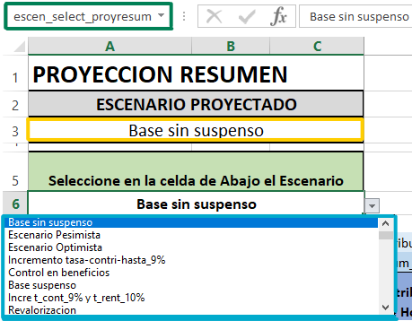
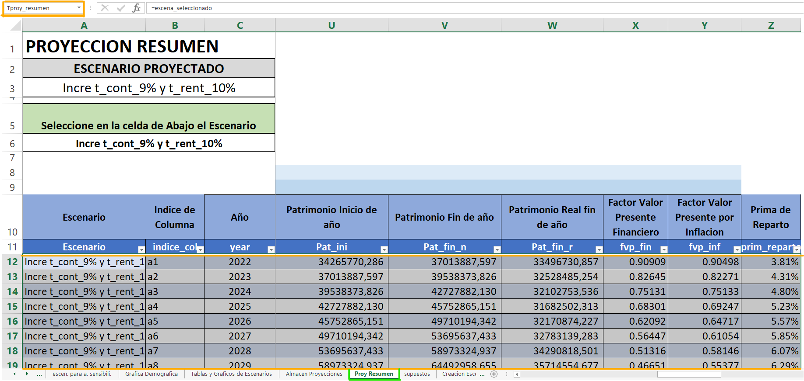
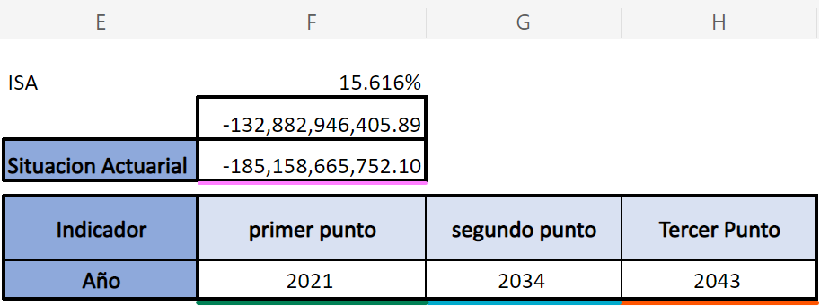

13 Resultados de Proyecciones
13.1 Resumen de Proyecciones [Proy Resumen]
Aquí se establece un resumen de las proyecciones con cada uno de los escenarios planteados en secciones anteriores, los componentes o variables que se proyectan estos representan valores importantes dentro del estudio ya que este como tal es la proyección de flujo de efectivo para el régimen, se considera la cantidad de contribuciones que se concederán por género y por años proyectados, los ingresos financieros del régimen, el monto total anual de las pensiones que se otorgan, los diferentes tipos de gastos en los que incurre el régimen, un desglose sobre el patrimonio, la situación actuarial y así mismo un indicador importante el cual son los puntos críticos los cuales se describieron en secciones anteriores. Cada uno de ellos se detallara a continuación:
13.1.1 Seleccionar el tipo de escenario [escen_select_proyesum]
En la parte superior izquierda de la hoja nos encontramos una lista desplegable en la cual se puede seleccionar el tipo de escenario que deseamos analizar y proyectar a esta sección se le ha llamado “escen_select_proyesum”.

13.1.2 Resumen de Proyeccion [Tproy_resumen]
En esta tabla se plantea la información donde se proyectan una serie de parametros los cuales son de relevancia para el estudio a dicha tabla se le ha llamado “Tproy_resumen”
- \([Escenario]\) aquí se muestra el escenario seleccionado en la sección “escen_select_proyesum”.
- \([indice\_{col}]\) muestra el indice de columna por cada año proyectado.
- \([Año]\) aquí se establece todos los años proyectados
- \([contrib\_{M}]\) y \([contrib\_{F}]\) contribuciones de Hombres y mujeres, estos parametros muestran la cantidad total de contribuciones por afiliados activos que se proyectó tanto por años como por genero. A modo de ejemplo se realiza el siguiente calculo:
Busca las (Contribuciones) en la tabla “Tresum_AM” y “Tresum_AF” que se encuentra en la hoja [Activos_M] y [Activos_F] respectivamente devolviendo su referencia para determinar el número de columna del rango que contiene este valor en especifico y luego es necesario buscar el (indice_col) en “Tresum_AM” y “Tresum_FM” para que nos retorne ese valor exacto. Para dicho cálculo se hace uso de la fórmula 9.1.1 llamada Total de contribución, que se encuentra en (Nota Técnica de Proyección de Flujos del Régimen del Seguro de Previsión Social, a diciembre 2020)
\[\begin{equation} {ContribY}_j={num\_contri}_j\times{ttot\_contri}_j\ \times\sum{{Sal\_act}_{x,j}\times{Can}_{x,j}} \end{equation}\]Donde:
\({ContribY}_j\) = total de contribución de afiliados activos de género Y en el año j.
\({ttot\_contri}_j\) = porcentaje de contribución que realizan los afiliados activos.
\({num\_contri}_j\) = total de meses de contribución que realizan los afiliados activos en el año.
\({Can}_{x,j}\) = cantidad de afiliados activos femeninos de edad x en el año j.
\({Sal\_act}_{x,j}\) = sueldo promedio de los afiliados activos a la edad x en el año j.
- [IngFin] Ingreso Financiero, son los ingresos que se esperan recibir por inversiones. Para ejemplificar como se estiman estos datos se realizan los siguientes calculos:
\[INDICE (Tsupuestos[trend\_efect],\] \[COINCIDIR(C12,Tsupuestos[year],1),1) \times (U12+S12/2)\]
Busca en la tabla “Tsupuestos” de la hoja \([supuestos]\) en la columna llamada trend_efect, luego busca por coincidencia el valor del año que es menor o igual al buscado y todo este resultado es multiplicado por el promedio de la suma de (uti_oper) Utilidad Operativa y (Pat_ini) Patrimonio inicio de año.
\[\begin{equation} {IngFin}_j={trend\_efect}_j\times\left({Pat\_ini}_j+\frac{{Uti\_oper}_j}{2}\right) \end{equation}\]Donde:
\({IngFin}_j\) = ingresos financieros proyectados en el año j.
\({trend\_efect}_j\) = tasa de rendimiento de las inversiones del fondo.
\({Pat\_ini}_j\) = patrimonio al inicio de cada año j.
\({Uti\_oper}_j\) = utilidad operativa para cada año j.
Igual a la fórmula 9.1.2 llamada Ingreso Financiero, que se encuentra en (Nota Técnica de Proyección de Flujos del Régimen del Seguro de Previsión Social, a diciembre 2020)
- \([Jubila\_{Y}]\), \([Peninv\_Y]\),\([Penviud\_Y]\) y \([Penorfa]\) Cada uno de los parametros descritos anteriormente representan los totales de beneficios por pensiones para cada tipo de beneficio que se otorgan por genero Y, para ejemplificar se establece el siguiente codigo:
Busca el valor del beneficio por pensiones en base al año e indice de columna en la tabla resumen llamada “Tresum_XY” donde X es el tipo de beneficio que se establece y Y representa el genero, que se encuentra ubicada en la hoja de excel del tipo de beneficio (jubilados, invalidos, viudez y orfandad) establecido.
Cada una de las siguientes formulas representa el valor los beneficios por pensiones otorgados para cada uno de los estados por genero.
Para ello ver las siguientes ecuaciones:
Ecuación \(\ref{eq:penjt}\)
Ecuación \(\ref{eq:penit}\)
Ecuación \(\ref{eq:penvt}\)
Ecuación \(\ref{eq:penht}\)
- \([Aux\_Funeb]\) Monto Beneficio Auxilio Funebre, este parametro establece los valores que se otorgaran por ayuda funebre, para el calculo de ello lo que se realiza es una busqueda del monto total de beneficios por ayuda funebre (\(Tot.\ Ben.\ A.\ F.\)) en las tablas resumen “Tresum_XY” donde X puede ser (Activos, Jubilados, Invalidos) y Y representa el genero (F y M), posteriormente realiza una suma de todos estos valores.
Donde:
\({Aux\_Funeb}_j\) = monto total de beneficio por ayuda funebre en el año j.
\({AFunebre\_Y}_j\) = ayuda monetaria que se otorga a un activo de genero Y en el año j.
\({AFunebreJ\_Y}_j\) = ayuda monetaria que se otorga a un jubilado de genero Y en el año j.
\({AFunebreI\_Y}_j\) = ayuda monetaria que se otorga a un invalido de genero Y en el año j.
- \([Gasto\_Salud]\) Gasto de Salud de invalidez y vejez, este parametro establece los valores que se otorgaran por atencion medica a los pensionados por invalidez y vejez, para el calculo de ello lo que se realiza es una busqueda del monto total de Aportes de Salud en las tablas resumen “Tresum_XY” donde X puede ser (Invalidos y Jubilados) y Y representa el genero (F y M), posteriormente realiza una suma de todos estos valores.
Donde:
\({Gasto\_salud}_j\) = monto total que se otorga por atención medica en el año j.
\({Apor\_salud\_Y}_j\) = aporte por atencion medica que se otorga a un jubilado de genero Y en el año j.
\({Apor\_saludI\_Y}_j\) = aporte por atencion medica que se otorga a un invalido de genero Y en el año j.
- \([Gadmin]\) Gasto Administrativo, son los gastos en los que incurre el regimen para el funcionamiento del mismo, para el calculo de este valor lo que se realiza una busqueda en la tabla “Tsupuestos” ubicada en la hoja de excel [supuestos] el valor o porcentaje de gastos administrativos llamado \((por\_ga)\) y este dato se multiplica por la suma de las contribuciones de hombres y mujeres llamadas \((contrib\_M)\) y \((contrib\_F)\) respectivamente. Para dicho cálculo se hace uso de la fórmula 9.2.1 llamada Gasto administrativo, que se encuentra en (Nota Técnica de Proyección de Flujos del Régimen del Seguro de Previsión Social, a diciembre 2020). A modo de ejemplose muestra el siguiente codigo:
\[INDICE (Tsupuestos [ por\_ga ],COINCIDIR ( C12,\] \[Tsupuestos [ year ],1 ),1 )\ast ( D12+E12)\] \[\begin{equation} {Gadmin}_j={por\_ga}_j\times{Ing\_oper}_j \end{equation}\]
Donde:
\({Gadmin}_j\) = gastos administrativos en el año j.
\({por\_ga}_j\) = porcentaje de gastos administrativos en relación al ingreso por contribuciones en el año j.
\({Ing\_oper}_j\) = ingreso total por contribuciones de afiliados activos en el año j.
- \([Ing\_oper]\) Ingreso de contribuciones, este parametro representa el valor total de los ingresos que tiene el regimen por contribuciones de hombres y mujeres cotizantes.
Donde:
\({Ing\_oper}_j\) = ingreso total por contribuciones de afiliados activos en el año j.
\({ContribM}_j\) = total de contribución de afiliados activos masculinos en el año j.
\({ContribF}_j\) = total de contribución de afiliados activos femeninos en el año j.
- \([gas\_oper]\) Gasto de Operación, este es un parametro que establece el monto total de gastos por pagos de beneficios y gastos administrativos,
El valor \({bg}_{pj}\) representa los distintos beneficios que paga el regimen (Jubilados, Invaldez, Viudez, Orfandad, Ayuda funebre, Servicio por salud) y los gastos administrativos en el año j, para el buen funcionamiento del mismo. Para dicho cálculo se hace uso de la fórmula 9.2.7 llamada Total de egresos, que se encuentra en (Nota Técnica de Proyección de Flujos del Régimen del Seguro de Previsión Social, a diciembre 2020).
- \([uti\_oper]\) Utilidad Operativa, es aquel valor o cifra que le queda al regimen luego de asumir sus gastos de operación, este parametro es el resultado de tomar los ingresos por contribuciones \([Ing\_oper]\) y restar los gastos de operación \([gas\_oper]\).
Donde:
\({uti\_oper}_j\) = Utilidad operativa en el año j.
\({Ing\_oper}_j\) = Ingreso total por contribuciones de afiliados activos en el año j.
\({gas\_oper}_j\) = Gastos totales de operación en el año j.
- \([uti\_tot]\) Utilidad Total, este parametro se establece haciendo la suma de la utilidad operativa \([uti_oper]\) más el ingreso financiero \([IngFin]\).
Donde:
\({uti\_tot}_j\) = utilidad total en el año j.
\({uti\_oper}_j\) = utilidad operativa en el año j.
\({IngFin}_j\) = ingresos financieros proyectados en el año j.
\([Pat\_ini]\) Patrimonio inicio de año, este dato lo tomamos de la hoja \([supuestos]\) en la celda llamada “Pat_ini” en la cual se encuentra el patrimonio y Reservas Tecnicas.
\([Pat\_fin\_n]\) Patrimonio fin de año, este parametro se establece como la suma del patrimonio inicial más la utilidad total del año en proyección.
Donde:
\({Pat\_fin\_n}_j\) = patrimonio a fin del año j.
\({Pat\_ini}_j\) = patrimonio a inicio del año j.
\({uti\_tot}_j\) = utilidad total en el año j.
- \([Pat\_fin\_r]\) Patrimonio real fin de año, este parametro se determina multiplicando el Patrimonio de fin de año \([Pat\_fin\_n]\) y el Factor de valor presente por Inflacion llamado \([fvp\_inf]\).
Donde:
\({Pat\_fin\_n}_j\) = patrimonio a fin del año j.
\({Pat\_fin\_r}_j\) = patrimonio real a fin del año j.
\({fvp\_inf}_j\) = factor de valor presente financiero en el año j.
- \([fvp\_fin]\) Factor Valor Presente financiero, también conocido como el factor de valor presente o factor de descuento, para su respectivo calculo se sigue la siguiente formula
Donde:
\({fvp\_fin}_j\) = factor de valor presente finaciero en el año j.
\(n\) = representa los años proyectados.
\(trend\_efect\) = tasa de rendimiento efectiva.
- \([fvp\_inf]\) Factor Valor Presente por Inflacion, este parametro incluye un proceso de descuento en el que influye la inflación para su respectivo calculo se sigue la siguiente formula
Donde:
\({fvp\_inf}_j\) = factor de valor presente por inflación en el año j.
\(tinf\_real\) = tasa de inflación.
- \([prim\_reparto]\) Prima de reparto, es la tasa de contribución que sería requerida para aplicar a los salarios y obtener el ingreso necesario para cubrir el gasto total del RSPS. Para obtener este parametro lo que hacemos es multiplicar la tasa total de contribución por los gastos de operación y dividir ese producto entre los ingresos por contribuciones. Ejemplificado de la siguiente forma:

13.1.3 Indicadores Claves
En esta sección del resumen de proyecciones se encuentran parámetros importantes los cuales nos indican el estado del régimen según los datos proyectados, uno de estos factores son los puntos críticos, estos indicadores financieros se utilizan para ponderar y evaluar los resultados de las operaciones del Régimen, dichos indicadores nos muestran los años en los cuales los ingresos que recibe el régimen no son suficientes para cubrir los gastos del mismo y por ello se incurren en una serie de procesos que va desde el utilizar ingresos financieros hasta el consumo total del patrimonio. Y por último se analiza la situación actuarial del régimen en el año base de proyección, así como la probable tendencia futura de sus ingresos y gastos.
